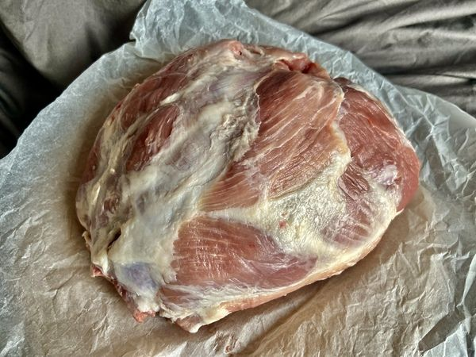

Receptek
Mangalica a konyhában – séfektől és tőlünk. A hozzávalókat egy kattintással a kosárba teheted.

▶ VideóLázár chef · ünnepi fogás
Mangalica a konyhában – séfektől és tőlünk. A hozzávalókat egy kattintással a kosárba teheted.

▶ Videó